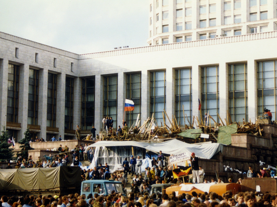

С декабря 1991 года Россия (Российская Федерация) существует как независимое государство.
В январе 1992 года в России с либерализации цен начинаются радикальные экономические реформы, переход от социализма к рыночной экономике.
В апреле 1992 года VI съезд народных депутатов РСФСР трижды отказался ратифицировать беловежское соглашение и исключить из текста конституции республики упоминание о конституции и законах СССР, что впоследствии стало одной из причин противостояния Съезда народных депутатов с президентом Ельциным и в дальнейшем привело к разгону Съезда в октябре 1993 года. Конституция СССР и законы СССР продолжали упоминаться в статьях 4 и 102 Конституции вплоть до 25 декабря 1993 года, когда вступила в силу принятая всенародным голосованием Конституция Российской Федерации, которая не содержала упоминания о Конституции и законах Союза ССР.
Президент Борис Ельцин и назначенный им и. о. председателя правительства Егор Гайдар начали проводить в стране радикальные либеральные реформы («шоковая терапия»), направленные на становление рыночной экономики. В ходе либеральных реформ были проведены либерализация цен, малая приватизация, введена свобода торговли. Государство фактически прекратило регулировать цены на товары. Одновременно с этим была провозглашена свобода торговли, предприятия и граждане получили свободу экономической деятельности.
В стране начался тяжёлый кризис: многократно усилилось имущественное расслоение на богатых и бедных, начался демографический кризис, население обнищало. Передел собственности был осуществлён под флагом приватизации госсобственности, когда узкая группа людей приобрела во владение за бесценок крупные промышленные предприятия (олигархи).
Радикальные реформы, в результате которых значительная часть населения страны обеднела, вызвали сопротивление Съезда народных депутатов и Верховного Совета России, которое возглавили председатель Верховного Совета Руслан Хасбулатов и вице-президент Александр Руцкой. В ответ Ельцин 21 сентября 1993 года принял указ о роспуске Съезда и парламента, который был признан антиконституционным и являлся основанием для отрешения Ельцина от должности президента. Обострился конституционный кризис, вылившийся в вооружённый конфликт. В сентябре — октябре 1993 года происходят кровавые столкновения демонстрантов, сторонников Верховного Совета и верных правительству милиции и войск. Демонстранты, сторонники парламента, штурмуют мэрию Москвы, пытаются взять штурмом телецентр Останкино, после чего президент Ельцин отдаёт приказ ввести армию в Москву и подавить мятеж. Утром 4 октября танки расстреливают Белый дом, вынудив депутатов Верховного Совета и его лидеров Хасбулатова, Руцкого и др. сдаться. Съезд народных депутатов и Верховный Совет были разогнаны.
Ельцин инициировал референдум 12 декабря 1993 года, на котором была принята новая конституция России. Президент получил широкие полномочия, вместо Верховного Совета учреждался двухпалатный парламент, состоящий из Государственной Думы и Совета Федерации. Высший орган власти — съезд народных депутатов — упразднялся. События октября — декабря 1993 года окончательно завершили 76-летний советский период в истории России.
На фоне общественного противостояния разгорелись многочисленные постсоветские конфликты, одним из которых стала Первая чеченская война 1994—1996 годов. Северный Кавказ надолго превратился в регион повышенной террористической угрозы.
Ельцин смог одержать победу во втором туре на президентских выборах 1996 года. В 1998 году Россия вступила в международный клуб Большая восьмёрка (G8). К концу 90-х в России снова назрел экономический кризис, выразившийся в обесценивании национальной валюты и невозможности государством выплачивать долги по кредитам (дефолт 1998 года). В 1998—1999 годах в России сменилось четыре правительства. В августе 1999 года премьер-министром был назначен директор ФСБ Владимир Путин, которому после начала второй чеченской войны Ельцин 31 декабря 1999 года передал всю полноту власти.
В 2000 году Владимир Путин стал вторым президентом России. В 2000-е годы был проведён ряд социально-экономических и политических реформ. В это время в России наблюдался рост экономики и увеличение реальных доходов населения: реальный ВВП России в 2000—2008 годах вырос вдвое, ВВП на душу населения в 2000—2008 годах также вырос вдвое, государственный долг России снизился с 92 % в 1999 году, до 7,5 % в 2008. Происходило укрепление «вертикали власти» в стране и установление господства на всех уровнях власти партии «Единая Россия», поддерживающей решения президента и правительства. Была успешно завершена вторая чеченская кампания, закончившаяся реинтеграцией Чечни в состав Российской Федерации.
В мае 2008 года первый вице-премьер Д. А. Медведев был избран президентом России, а В. В. Путин, согласно предвыборной договорённости, занял пост председателя правительства. В августе 2008 года Россия провела военную операцию против Грузии с целью освобождения Южной Осетии. С 2008 года (с момента основания) Россия входит в G20 (Большую двадцатку), международный клуб крупнейших экономик мира. Со второй половины 2008 года в России наблюдался серьёзный экономический кризис, активная фаза которого сошла на нет к концу 2009 года. По итогам 2011 года, ВВП России превысил докризисные показатели 2008 года, однако темпы роста экономики значительно снизились.
4 декабря 2011 года состоялись выборы в Госдуму, по результатам которых «Единая Россия» победила в третий раз подряд. Официальные результаты голосования вызвали значительные протесты в стране, рядом политологов и журналистов были отмечены различные фальсификации в день голосования. В 2012 году согласно очередной предвыборной договорённости произошла «рокировка», Владимир Путин снова стал президентом, а Дмитрий Медведев занял пост председателя правительства, после чего протесты приобрели антипутинскую направленность, однако вскоре они пошли на спад.

В феврале 2014 года в Сочи прошли первые в России Зимние Олимпийские игры. 18 марта 2014 года произошло присоединение Крыма к Российской Федерации (Украина и Генеральная Ассамблея ООН расценивают эти события как оккупацию). Этому событию предшествовал масштабный общественно-политический кризис (Евромайдан) в регионе, вызванный сменой власти на Украине. В результате присоединения Крыма, непризнанного странами Запада, против России началась т. н. «санкционная война», включающая в себя экономические санкции, а также исключение России из G8. Последовавшее за этим: замедление экономики, резкое падение курса рубля и падение цен на нефть привели к тому, что начиная с декабря 2014 года страну поразил социально-экономический кризис.
С 1 января 2015 года Россия входит в Евразийский экономический союз, объединивший ряд стран СНГ. С 30 сентября 2015 года Россия проводит военную операцию в Сирии, против боевиков Исламского государства и группировок сирийской оппозиции, ставшую первыми широкомасштабными боевыми действиями постсоветской России за пределами бывшего СССР.
В 2018 году Владимир Путин переизбрался на четвёртый срок. Также в 2018 году в России впервые прошёл Чемпионат мира по футболу.
Для сложившийся в первые десятилетия XXI века российской политической системы, по мнению многих политологов характерны: авторитаризм, представляющий собой суперпрезидентскую власть, основанную на персоне президента Владимира Путина и культе его личности (путинизм), этатизм, имитационная демократия. В 2020 году, после утверждения значительных поправок к Конституции России Владимир Путин получил право на «обнуление» своих президентских сроков после 2024 года, таким образом получив фактическое право избираться до 2036 года.
В феврале 2022 года Россия признала независимость Донецкой и Луганской Народных Республик, а с 24 февраля началась специальная военная операция на территории Украины. В ответ на это ряд стран ввёл жёсткие экономические санкции против России.
| Дата | Событие |
|---|---|
| 1992 г. | Начало либеральных экономических реформ. Начало приватизации. Создание ОДКБ |
| 1993 г. | Конституционный кризис, нападение сторонников распущенного Верховного Совета на здание мэрии Москвы и телецентр Останкино и расстрел здания Верховного совета России. Принятие всенародным голосованием Конституции Российской Федерации. |
| 1994 - 1996 г. | Война в Чечне. |
| 1996 г. | Б. Н. Ельцин вновь избран Президентом РФ. Создание Союзного государства России и Белоруссии |
| 1998 г. | Дефолт в России. |
| 1999 г. | Вторжение боевиков в Дагестан, начало Второй чеченской кампании. Серия террористических актов в российских городах (Буйнакске, Москве и Волгодонске). Отставка Б. Н. Ельцина, назначение исполняющим обязанности Президента РФ Председателя Правительства РФ В. В. Путина. |
| Дата | Событие |
|---|---|
| 2000 г. | Президентом РФ избран В. В. Путин. Создание федеральных округов в РФ. Катастрофа АПЛ «Курск». Пожар на Останкинской телебашне в Москве. |
| 2001 г. | Затопление орбитальной станции «Мир», последней отечественной орбитальной станции. |
| 2022 г. | Захват заложников в театральном центре на Дубровке в Москве, совершённый чеченскими террористами. На посту главы Банка России Виктора Геращенко сменил Сергей Игнатьев. Всероссийская перепись населения 2002 года. |
| 2003 г. | Чуйское землетрясение 27 сентября 2003 года. Выборы в Государственную Думу IV созыва. |
| 2004 г. | Избрание Владимира Путина на второй срок. Террористический акт чеченских террористов на самолётах Ту-134 и Ту-154. Захват заложников в Беслане (Северная Осетия), совершённый чеченскими террористами. Отмена выборов глав регионов (последние после отмены выборы состоялись в Ненецком автономном округе в 2005 году). Председателем правительства утверждён Михаил Фрадков. |
| 2005 г. | Нападение боевиков на город Нальчик (Кабардино-Балкария). Первое в истории Российской Федерации объединение регионов — Пермская область и Коми-Пермяцкий автономный округ объединились в Пермский край. |
| 2006 г. | 32-й саммит G8 в Санкт-Петербурге. В России введена в оборот банкнота Банка России достоинством в 5000 рублей. |
| 2007 г. | Письмо десяти академиков. Взрыв на угольной шахте «Ульяновская» в Кемеровской области 19 марта 2007 года. В результате объединения регионов сформированы новые субъекты РФ — Красноярский (за счёт присоединения к Красноярскому краю Таймырского (Долгано-Ненецкого) и Эвенкийского автономных округов) и Камчатский (за счёт объединения Камчатской области и Корякского автономного округа) края. Председателем правительства утверждён Виктор Зубков. Выборы в Государственную думу V созыва. |
| 2008 г. | Президентом РФ избран Д. А. Медведев. Председателем правительства утверждён Владимир Путин. Вооружённый конфликт в Южной Осетии, приведший к признанию Россией независимости Южной Осетии и Абхазии. Вступление в силу поправок к Конституции РФ. В результате объединения регионов сформированы новые субъекты РФ — Иркутская область (за счёт присоединения к Иркутской области Усть-Ордынского Бурятского автономного округа) и Забайкальский край (за счёт объединения Читинской области и Агинского Бурятского автономного округа). |
| 2009 г. | Конкурс песни «Евровидение 2009» в Москве. Завершение Второй чеченской кампании. Авария на Саяно-Шушенской ГЭС 17 августа 2009 года. Пожар в клубе «Хромая лошадь» 5 декабря 2009 года. |
| 2010 г. | Вступил в силу Таможенный союз России, Белоруссии и Казахстана. Аномальная жара, лесные и торфяные пожары в европейской части России и смог в Москве. Всероссийская перепись населения 2010 года. Взрывы на шахте «Распадская» в Кемеровской области. |
| 2011 г. | Выборы в Государственную Думу VI созыва. |
| 2012 г. | Четвёртым Президентом РФ избран Владимир Путин. Председателем правительства утверждён Дмитрий Медведев. Массовые акции протеста в Москве и последовавшее «болотное дело» против их участников. Вступление России в ВТО. Возобновление выборов глав регионов. Проект 5-100. Саммит АТЭС во Владивостоке. Дело Оборонсервиса, приведшее к отставке министра обороны РФ Анатолия Сердюкова; министром обороны назначен Сергей Шойгу. |
| 2013 г. | Падение «Челябинского» метеорита на Урале. Теракты 21 октября, 29 и 30 декабря в Волгограде. Сильнейшее за 115 лет наводнение на Дальнем Востоке. Летняя Универсиада 2013 в Казани. На посту главы Банка России утверждена Эльвира Набиуллина. Утверждён официальный символ российского рубля. |
| 2014 г. | С 7 по 23 февраля 2014 года в городе Сочи были проведены XXII Зимние Олимпийские игры. Присоединение Крыма к Российской Федерации. |
| 2015 г. | Создание Евразийского экономического союза. Военная операция России в Сирии. Катастрофа A321 над Синайским полуостровом. Турецкий самолёт сбил российский Су-24. |
| 2016 г. | Первый ракетный пуск с космодрома «Восточный», первого постсоветского гражданского космодрома России. Выборы в Государственную Думу VII созыва. Дело Алексея Улюкаева — первое в истории постсоветской России уголовное дело против действующего (на момент задержания) члена Правительства РФ. Убийство посла России в Турции Андрея Карлова в Анкаре. |
| 2017 г. | Кубок конфедераций 2017 в России. Ураган в Москве и Московской области. В России введены в обращение банкноты Банка России в 200 и 2000 рублей. |
| 2018 г. | Избрание 4-го Президента РФ Владимира Путина на второй срок (суммарно — четвёртый). Пожар в торгово-развлекательном центре «Зимняя вишня» в Кемерово 25—26 марта 2018 года. Открытие автомобильной части Крымского моста. Чемпионат мира по футболу 2018 года в России. Массовое убийство в Керченском политехническом колледже. Пенсионная реформа в России (2019—2028). Русская православная церковь объявила о разрыве евхаристического общения с Константинопольским патриархатом из-за ситуации с предоставлением автокефалии православной церкви на Украине. Официально объявлено о создании Россией собственного гиперзвукового оружия. |
| 2019 г. | Увеличение основной ставки НДС до 20 %. Переход с аналогового телевещания на цифровое. Открытие железнодорожной части Крымского моста. Пожар на АС-31 1 июля 2019 года. |
| 2020 г. | Пандемия коронавирусной инфекции COVID-19. Владимир Путин предложил конституционную реформу, реализованную через всероссийское голосование, правительство Дмитрия Медведева ушло в отставку, новым премьер-министром назначен Михаил Мишустин; назначены члены нового правительства. |
| 2021 г. | Выборы в Государственную думу VIII созыва. Всероссийская перепись населения 2021 года. Массовые убийства в учебных заведениях в Казани и в Перми. |
| 2022 г. | Операция ОДКБ в Казахстане, первая военно-миротворческая операция ОДКБ с момента создания. Признание Россией независимости Донецкой и Луганской народных республик. Специальная военная операция и мобилизация. Массовое убийство в школе в Ижевске. Аннексия оккупированных территорий Украины. Теракты в России: убийство Дарьи Дугиной и взрыв на Крымском мосту. |